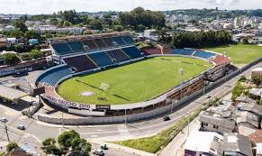
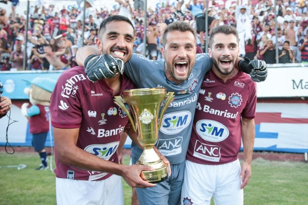
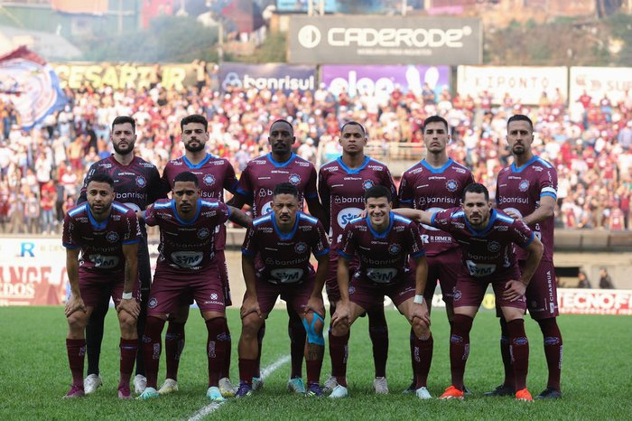

A Sociedade Esportiva e Recreativa Caxias do Sul é um clube do futebol brasileiro, sediado na cidade de
Caxias do Sul, no estado do Rio Grande do Sul, é
conhecido por S.E.R. Caxias, Grená do Povo, ou simplesmente Caxias. Seu uniforme é composto de camisa grená
e azul, com calção e meias grenás e brancas, e
seu mascote é Bepe, o italiano, que representa o povo que colonizou a Serra Gaúcha, atuando em estádio
próprio, o Estádio Francisco Stédile, mais conhecido
como Centenário. O título mais relevante da história do Caxias foi a conquista do Campeonato Gaúcho de 2000,
tendo sido ainda vice-campeão da principal
competição estadual por quatro vezes, campeão gaúcho do interior em 12 ocasiões, conquistando ainda três
copas organizadas pela Federação Gaúcha de Futebol.
O "Grená do Povo" foi o primeiro clube do interior do Rio Grande do Sul a disputar o Campeonato Brasileiro,
o que ocorreu em 1976, quando foi o 15º colocado entre 54
participantes, bem como o primeiro clube do interior gaúcho a disputar a Copa do Brasil, isso em 1991. A sua
campanha nacional mais destacada foi o décimo lugar no
Campeonato Brasileiro de 1978, competição disputada por 78 clubes. Sua torcida está entre as maiores do
interior do Rio Grande do Sul. Realiza o clássico Ca-Ju
contra o seu arquirrival Juventude, sendo essa para muitos a segunda rivalidade mais importante do futebol
gaúcho, perdendo somente para o Grenal, tratando-se
também essas duas agremiações, os clubes de fora da área metropolitana de Porto Alegre com mais
participações no Campeonato Gaúcho.
Estádio do Caxias

Origem e Nome: O terreno onde hoje se localiza o estádio pertencia ao antigo Grêmio Esportivo Flamengo, clube
que deu origem ao Caxias. Naquela época, o campo era
conhecido como "Baixada Rubra".
Inauguração:O estádio, já como propriedade particular do Caxias, foi inaugurado oficialmente em 12 de
setembro de 1976.
Primeiro Jogo: A partida inaugural ocorreu em 12 de setembro de 1976, com uma vitória do Caxias sobre o
Internacional por 2 a 1.
Capacidade:O Centenário é um dos maiores estádios do interior do Rio Grande do Sul, com capacidade para mais
de 22 mil pessoas.
Nome Oficial:O nome oficial, Estádio Francisco Stédile, é uma homenagem a um importante dirigente do clube
na época de sua construção.
O estádio é o palco do clássico da cidade, o Ca-Ju (Caxias versus Juventude), e já recebeu diversos jogos
importantes tanto no cenário gaúcho quanto no nacional.
Titulos

A equipe grená, comandada pelo técnico Rafael Lacerda, teve a melhor campanha da fase inicial do torneio, o
que lhe garantiu o direito de decidir a final em
casa, no Estádio Centenário.
Na trajetória até a final, o Caxias disputou seis partidas, com um desempenho que demonstrou organização e
bom futebol, superando adversários e chegando à decisão de
forma invicta, se considerarmos apenas o desempenho no turno que levou ao título, sem contar a fase de
grupos anterior do campeonato que classificou a equipe para
as semifinais.
Na semifinal, o Caxias venceu o Ypiranga por 1 a 0, garantindo a vaga na grande final contra o Grêmio.
A final ocorreu em 22 de fevereiro de 2020, no Estádio Centenário, em Caxias do Sul.
O Jogo: A partida foi bastante disputada, com as duas equipes buscando o resultado. O Caxias conseguiu
neutralizar as investidas do Grêmio e jogou de forma
organizada.
O único gol da partida e do título foi marcado por Diogo Oliveira, aos 33 minutos do segundo tempo, para a
festa da torcida presente no estádio.
A vitória de 1 a 0 sobre o favorito Grêmio foi considerada um feito histórico para o clube e garantiu, além
da taça, uma vaga na final geral do Campeonato Gaúcho
daquele ano.
Time Atual

Técnico: Fernando Marchiori
Jogadores:Goleiros: Thiago Coelho, Gabriel Toebe Zagueiros: Maurício Ribeiro, Andrés Robles, Windson, Joílson, Douglas, Alan Laterais: Vitinho, Thiago Ennes, Marcelo Meio campistas: Vini Guedes, Lorran, Guilherme Mantuan, Yann Rolim, Mossoró, Pedro Cuiabá, Tomas Bastos Atacantes: Welder ,Calyson, Iago, Vitor Feijão, Jeam ,Gabriel Lima, Gustavo Nescau